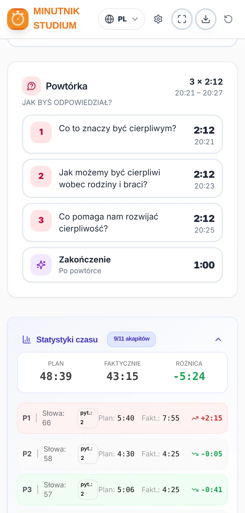

Instrukcja obsługi
Minutnik Studium
Jak przygotować i prowadzić Studium Strażnicy w wyznaczonym czasie
Jak przygotować i prowadzić Studium Strażnicy w wyznaczonym czasie
Chcesz zacząć od razu? Zobacz krótki przewodnik w 7 krokach.
Minutnik Studium pomaga bratu, który prowadzi Studium Strażnicy, dobrze rozplanować czas i skończyć punktualnie.
Wczytujesz artykuł na dany tydzień w formacie PDF, a aplikacja:
Aplikacja nieoficjalna. To bezpłatny, niezależny projekt. Nie jest oficjalną publikacją i nie ma związku z jw.org ani z organizacją Świadków Jehowy. Artykuł jest analizowany na twoim urządzeniu: nie jest nigdzie wysyłany ani przechowywany na żadnym serwerze.
Ilustracje w tej instrukcji przedstawiają wymyślony artykuł przykładowy, a nie prawdziwy artykuł ze Strażnicy.
Zainstaluj ją z Google Play: wyszukaj „Temporizador de Estudio” albo otwórz ten link:
play.google.com/store/apps/details?id=com.comangelo.temporizadorestudio
Nie ma jej jeszcze w App Store, ale działa tak samo w przeglądarce i można ją dodać do ekranu początkowego:
Otwórz temporizador-estudio.vercel.app w przeglądarce. W Chrome i Edge możesz ją zainstalować jako aplikację za pomocą ikony instalacji na pasku adresu.
Aktualizacje: gdy pojawi się nowa wersja, aplikacja wyświetli komunikat „Dostępna jest nowa wersja aplikacji.” z przyciskiem Aktualizuj. Nigdy nie aktualizuje się sama w trakcie studium.

Od góry do dołu znajdziesz:
Karta „Artykuł na ten tydzień” pokazuje bieżący tydzień (na przykład 9-15 listopada 2026) i wydanie Strażnicy, w którym się znajduje. Strzałkami ‹ › możesz wybrać inny tydzień.
Strażnica jest pobierana w języku aplikacji. Jeśli aplikacja jest po polsku, pobierane jest wydanie polskie; jeśli po angielsku – angielskie, i tak samo w każdym języku. Żeby pobrać inny język, najpierw zmień język aplikacji (rozdział 14). W języku portugalskim pobierane jest wydanie z Portugalii albo z Brazylii, zależnie od twojego wyboru.
Aplikacja przechowuje kopię czasopisma. Kolejne tygodnie tego samego wydania otwierasz od razu przyciskiem „Otwórz artykuł na ten tydzień”, bez ponownego pobierania. Zapisane czasopisma usuwają się same 3 miesiące po ostatnim tygodniu.
Na komputerze możesz też przeciągnąć plik PDF w dowolne miejsce ekranu startowego (pojawi się komunikat „Upuść tutaj PDF Strażnicy”) albo wybrać folder, w którym trzymasz czasopisma – aplikacja sama je znajdzie.
Komunikat, że czasopismo nie jest jeszcze opublikowane? jw.org publikuje każde wydanie kilka tygodni wcześniej. Jeśli wybierzesz bardzo odległy tydzień, może ono jeszcze nie być dostępne.


Po wczytaniu artykułu zobaczysz:
Na karcie planu komunikat „Komentarze: X s na pytanie” mówi, ile średnio czasu jest na odpowiedź na każde pytanie.
Jeśli artykuł jest za długi na wybrany czas, pojawi się komunikat „Nie mieści się” z informacją, ile brakuje. Możesz wydłużyć czas trwania albo wybrać szybsze czytanie w Ustawieniach.

Każdy akapit zajmuje jeden wiersz z numerem, planowanym czasem i przybliżoną godziną, o której powinien się skończyć. Kolorowe etykiety pokazują, na co zwrócić uwagę:
| Etykieta | Co oznacza |
|---|---|
| Jakuba 5:7, 8 | Jest werset do przeczytania. Widać dokładne miejsce w Biblii. |
| Ilustracja | Pytanie odsyła do ilustracji w artykule („Zobacz też ilustrację”). |
| Przypis | Jest przypis do omówienia. |
| ★ Ważna myśl | Pytanie wspomina o ramce albo o wyróżnionej myśli w cudzysłowie. |
Stuknij akapit, żeby go otworzyć. Zobaczysz liczbę słów, czas czytania, pytanie, a przy długim akapicie – dodatkowy czas na więcej komentarzy. Stamtąd:
Akapity ze wspólnym pytaniem (na przykład „5, 6.”) są traktowane jako grupa, a przycisk Dalej przeskakuje całą grupę.
Zalecane: w czasie studium otwórz tryb prezentacji (rozdział 9). Tutaj opisano ogólne działanie, które jest takie samo w obu widokach.
Na telefonie główne przyciski są zawsze na dole, na dolnym pasku:


Na karcie planu u góry możesz wstrzymać i wznowić studium. Komunikat „Zakończ za m:ss” przypomina, ile zostało do godziny końca.
Ekran nie gaśnie, dopóki trwa studium, więc nie musisz dotykać telefonu. Po zakończeniu telefon znowu wygasza ekran jak zwykle.
Karta bieżącej części (akapitu, wstępu, pytania do powtórki lub zakończenia) zmienia kolor zależnie od upływu czasu:
| Kolor | Kiedy | Co robić |
|---|---|---|
| W CZASIE | Do planowanego czasu. | Wszystko dobrze: tak trzymaj. |
| DOGRYWKA | Czas został przekroczony, ale nie więcej niż o 30%. | Zacznij kończyć komentarze. |
| PRZEKROCZONO | Ponad 30% więcej niż zaplanowano. | Przejdź do następnego akapitu. |


W ostatnich 5 minutach studium akapity i pytania do powtórki nie mają dogrywki: zmieniają kolor od razu z zielonego na czerwony, żeby nie zabierać czasu na końcówkę. Zakończenie zawsze zachowuje swoją dogrywkę.
Jeśli jakaś część się przedłuży, nic się nie stanie: po stuknięciu Dalej aplikacja na nowo rozdzieli pozostały czas na to, co zostało, żebyś skończył punktualnie.
To zalecany sposób prowadzenia studium. Tryb prezentacji nie rozprasza: pokazuje tylko to, co potrzebne, kolory zielony, żółty i czerwony od razu mówią ci, na jakim etapie jesteś i jak wyglądasz z czasem, a przyciski Dalej i Komentarz są duże i łatwo je znaleźć i nacisnąć.
Przeznaczony do położenia telefonu lub tabletu na pulpicie albo podium: wszystko jest duże i czytelne na pierwszy rzut oka. Otwiera się go przyciskiem ⛶ na dolnym pasku, a zamyka przyciskiem ✕ (albo klawiszem Esc na komputerze). Na telefonie zamyka go też przycisk „wstecz”, bez wychodzenia z aplikacji.
U góry widać aktualną godzinę, godzinę końca i pozostały czas z paskiem postępu. Pośrodku – bieżąca część ze stoperem i kolorem oraz etykiety (na przykład Przeczytaj Jakuba 5:7, 8). Na dole przyciski Komentarz i Dalej.
Są trzy układy. Zmienia się je przyciskiem układu ▦ (w prawym górnym rogu) albo w Ustawienia → Ekran:


W trybie prezentacji duży przycisk sam prowadzi przez studium: Rozpocznij studium → Przejdź do akapitu 1 → Następny akapit → Pytanie do powtórki → Przejdź do zakończenia → Zakończ studium. W ostatnich 5 minutach pojawia się komunikat, że trzeba kończyć.
Przykład (artykuł z ilustracji): w 60-minutowym studium z 11 akapitami i 21 pytaniami (18 do akapitów i 3 do powtórki), przy czasie na odpowiedź 35 sekund, około 7 minut zajmuje czytanie, 2 minuty wstęp i zakończenie, a około 51 minut komentarze – czyli trochę ponad 2 minuty na pytanie.
Stuknij ⚙ w prawym górnym rogu. Ustawienia są zapisywane na twoim urządzeniu i podzielone na cztery karty:


| Karta | Co możesz zmienić |
|---|---|
| Czas | Czas trwania studium (do 60 min). Czas wstępu i zakończenia (od 30 s do 3 min). Wizyta nadzorcy obwodu. |
| Czytanie | Tempo czytania lektora: Wolno (150), Normalnie (180) lub Szybko (210 słów/min). Czas na odpowiedź (od 30 do 90 s; dotyczy też każdego wersetu, ilustracji, przypisu i ważnej myśli). Długie lub połączone akapity: Bez dodatku, Normalnie lub Więcej komentarzy. |
| Alerty | Dźwięk i wibracje (z przyciskami do sprawdzenia). Alert akapit ponad czas, alert „Zostało 5 minut” i maksymalnie dwa alerty przed powtórką. |
| Ekran | Język, jasny lub ciemny motyw (z czterema ciemnymi wariantami) i układ trybu prezentacji. |
Jeśli zmienisz tempo czytania albo czas na odpowiedź w trakcie studium, zmiana obejmie następne studium.
Sprawdź, czy telefon nie jest wyciszony, jeśli chcesz słyszeć alerty. Wibracje działają na Androidzie; na iPhonie zależą od przeglądarki.

W tygodniu wizyty włącz przełącznik „Wizyta nadzorcy obwodu” na ekranie startowym (albo w Ustawienia → Czas). Studium trwa wtedy 30 minut i akapity nie są czytane: zostają pytania, wersety, ilustracje i powtórka. Pamiętaj, żeby wyłączyć go po wizycie.

Aplikacja działa w językach: hiszpańskim, angielskim, niemieckim, włoskim, francuskim, portugalskim, polskim, niderlandzkim i rumuńskim. Język zmienisz przyciskiem z globusem u góry albo w Ustawienia → Ekran. Po zmianie języka:
Ta instrukcja jest dostępna we wszystkich tych językach: skorzystaj z przycisków języka u góry strony.

Statystyki czasu porównują czas planowany z faktycznym dla całego studium i każdego akapitu, z różnicą na zielono (szybciej) lub na czerwono (wolniej) i z policzonymi komentarzami. Pomagają zobaczyć, które części się przedłużyły, i coś poprawić następnym razem (na przykład tempo czytania).
Przyciskiem eksportu ⬇ na górnym pasku możesz zapisać plan studium jako obraz (PNG) lub PDF, żeby go wydrukować albo komuś przesłać.
Żeby przygotować kolejne studium, użyj przycisku rozpoczęcia od nowa ↻.